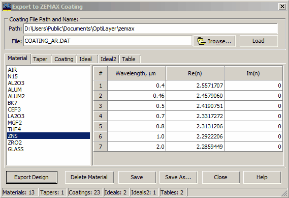
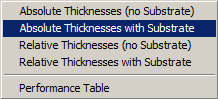

Export ZEMAX Coating
Export ZEMAX Coating
In OptiLayer, users have the option to export the current design description or the spectral performance of the current design to ZEMAX software for optical system design. ZEMAX, developed by Zemax Development Corporation, is a widely-used software tool for optical design and analysis. ZEMAX stores multilayer coatings and associated information in files with the .dat extension, with the default file name as COATING.DAT. It is advised not to modify or alter the COATING.DAT file according to the ZEMAX manual. For compatibility and best practices, OptiLayer suggests saving designs in a file with a similar name, maintaining the convention used by ZEMAX. This helps ensure seamless communication and accurate data transfer between OptiLayer and ZEMAX software applications.

In OptiLayer, the process of exporting design information to ZEMAX software for optical system design involves the following steps:
Specify ZEMAX File: Users can designate the ZEMAX file containing the description of multilayer coatings by entering the path and filename in the edit fields or by utilizing the Browse button to navigate to the desired file location.
Load ZEMAX File: Once the file is located, users can click on the Load button to import the contents of the file into the Export dialog within OptiLayer. This step enables OptiLayer to export designs to the specified ZEMAX file.
ZEMAX File Components: ZEMAX files contain essential information about layer materials, their dispersive properties (Material tab), design descriptions (Coating tab), and optionally, performance properties of multilayers (Ideal, Ideal2, Table tabs). Users can refer to the ZEMAX documentation for detailed insights into these components.
Editing Options: Within the Export dialog, users can view the contents of the ZEMAX Coating file and have the option to delete materials if needed. This capability is particularly useful as ZEMAX imposes limitations on the total number of materials that can be included in the file.
By following these steps and leveraging the functionalities provided in the Export dialog, users can seamlessly export optical design data from OptiLayer to ZEMAX software, ensuring accuracy and consistency in the design transfer process.

When the Export Design button is pressed in OptiLayer to transfer optical design information to ZEMAX software, a popup menu will appear to allow the user to select the desired export mode. The menu typically includes four different export options for the design specification,as well as an additional option for exporting the data as a performance table.
The available export options are typically listed as follows:
Export ZEMAX Coating description: This export option allows users to transfer the detailed description of the multilayer coatings and design parameters from OptiLayer to ZEMAX. By selecting this option, users can seamlessly export the coating specifications, material properties, dispersive properties, and design characteristics for further analysis and simulation in ZEMAX software.
Export ZEMAX Performance Table: In addition to exporting the coating description, users can choose this option to export the optical performance data in the form of a performance table. This option enables the transfer of spectral performance information, including transmittance, reflectance, phase and group delay, and other performance metrics, which can be utilized for optimizing optical system designs in ZEMAX.
By providing these distinct export options, OptiLayer empowers users to tailor the transfer of optical design data to meet their specific requirements in ZEMAX software. This flexibility enables seamless integration between the two software tools and streamlines the design workflow for enhanced efficiency and accuracy in optical system design and analysis.